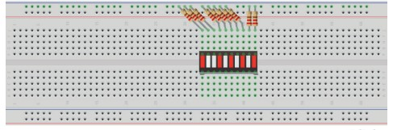

Projeto Super Máquina
Materiais Utilizados:
- Protoboard
- arduino cabo USB
- 11 jumpers macho-macho
- 10 resistores 220 ohms
- 1 Barra Grafica de LEDs
Montagem esquemática:
Encaixar a barra gráfica de LEDs na linha central do Protoboard, conectando dez terminais nos furos da região superior e dez terminais na região inferior, como na imagem ao abaixo
Adicionar 3 jumpers macho macho
Conectar 1 jumper no terminal direito do potenciômetro e ao pino 5V da placa do arduino
Conectar o 2 jumper no terminal esquerdo do potenciômetro ao pino GND do arduino
E conectar o ultimo jumper ao terminal central do potenciômetro à porta analogica A0 do arduino